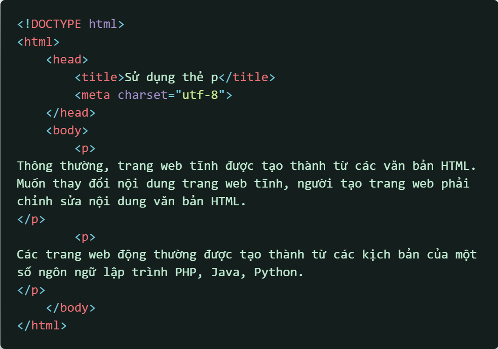
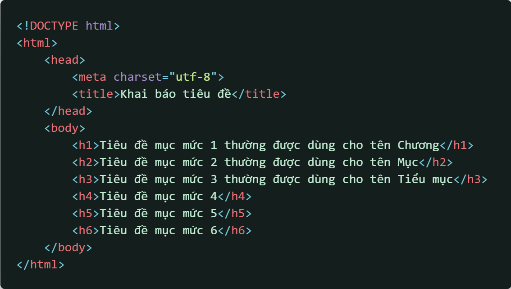
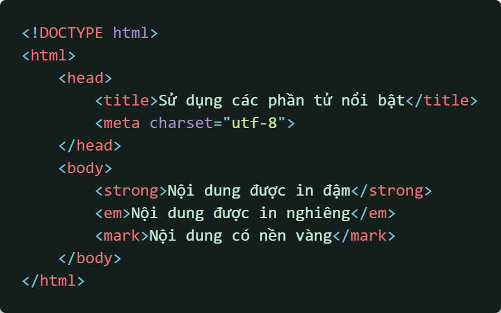
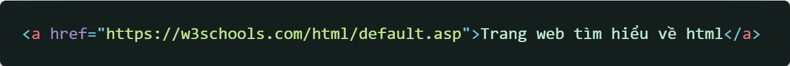
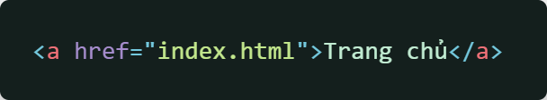
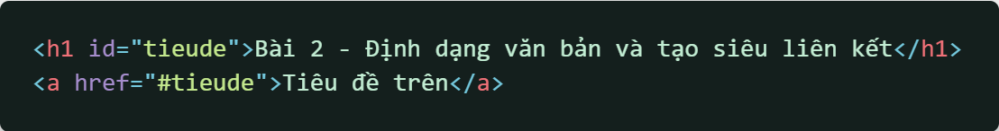

Để tạo 1 đoạn văn bản, ta có thể sử dụng thẻ
Dưới đây là 1 ví dụ về sử dụng phần tử p để tạo đoạn văn bản cho trang web
Ngoài văn bản thuần, HTML còn hỗ trợ thêm tiêu đề mục theo 6 cấp độ
Để tạo 1 tiêu đề, ta sử dụng thẻ
Dưới đây là 1 ví dụ về sử dụng các cấp tiêu đề mục cho trang web
Trong HTML, ta có thể làm nổi bật nội dung văn bản giống như Powerpoint. Dưới đây là 1 bảng liệt kê một số phần tử để làm nổi bật
| Phần tử | Cú pháp | Ví dụ và mục đích |
| strong | Strong sẽ làm cho nội dung được in đậm. | |
| em | Em sẽ làm cho nội dung được in nghiêng. | |
| mark | Mark sẽ làm cho nội dung được tô nền màu vàng. |
Dưới đây là 1 ví dụ về sử dụng các phần tử trên làm nổi bật nội dung văn bản
Ngoài các phần tử kể trên, ta có thể sử dụng b để thay thế cho strong; i để thay thế cho em.
HTML định nghĩa a là phần tử để tạo các siêu liên kết, kết nối trang web hiện tại với các tài nguyên khác như trang web, hình ảnh, âm thanh, bla bla...
Phần tử a sẽ được khai báo như sau:
Thuộc tính href dùng để xác định địa chỉ tài nguyên web. URL có cấu trúc: Giao thức://Tên miền/Đường dẫn
Ví dụ: https://www.w3schools.com/html/default.asp
Một số ví dụ về các cách tạo siêu liên kết
  À, cái trên nó gọi là id, hay tên định danh, là 1 cách để có thể giúp cho người đọc chuyển nhanh đến nội dung mong muốn, như 1 cái mục lục vậy.